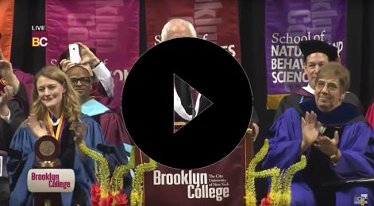

Engelsk B
Ny ordning
kl. 09.00-14.00
Vejledning til opgavesættet
| Du skal besvare følgende opgaver: | |
|
|
| Tekster til Assignment 5: | |
| 5 A – Fiction: | “Goldhawk”, a short story by Katherine Magyarody, 2017. |
| 5 B – Non-fiction: | “Bernie Sanders to Brooklyn College Graduates: Don’t ‘Allow Demagogues to Divide Us’”, 2017. |
Vejledning og skabelon til at løse opgaven
Den samlede eksaminationstid for Assignment 1-5 er 5 timer. Besvarelsen bedømmes som en helhed ud fra de faglige mål for niveauet. Der lægges vægt på beherskelsen af det engelske sprog, forståelse af forlægget og færdighed i skriftlig fremstilling på engelsk.
Det anbefales, at du skriver din besvarelse i skabelonen, som ligger under Template i menuen til venstre. Besvarelsen afleveres i ét dokument med opgaverne i rækkefølgen 1-5.
Henvisninger til tekst, video- og lydklip
Hvis du citerer, skal du angive kilde.
Alt anvendt materiale skal være engelsksproget og angives med kildehenvisninger. Til forklaring af grammatiske opgaver kan materialerne være på dansk.
Du kan henvise til dele af video- og lydklip, f.eks. ved at angive afspillerens minut- og sekundtal for henholdsvis starten og slutningen af klippet.
Alt anvendt materiale skal være engelsksproget og angives med kildehenvisninger. Til forklaring af grammatiske opgaver kan materialerne være på dansk.
Du kan henvise til dele af video- og lydklip, f.eks. ved at angive afspillerens minut- og sekundtal for henholdsvis starten og slutningen af klippet.
|
Tekster i opgavesættet
Teksternes ortografi og tegnsætning følger forlæggene. Trykfejl er dog rettet.
Opsætningen følger ikke nødvendigvis forlæggene. Dog følges forlægget nøje, hvor opsætningen på den ene eller anden måde indgår i opgaven.
Opsætningen følger ikke nødvendigvis forlæggene. Dog følges forlægget nøje, hvor opsætningen på den ene eller anden måde indgår i opgaven.
Assignment 1
Find alle verberne (udsagnsordene) i præteritum (datid) i nedenstående tekst, og omskriv dem til præsens (nutid). Skriv hele teksten som dit svar, og marker verberne tydeligt som i eksemplet.
| Eksempel: | It was at a party, of sorts… It is at a party, of sorts… |
It was at a party, of sorts. They were in a sprawling-browned field behind a friend of a friend’s house that butted up against a cheap par three golf course. There was a trampoline where a couple Caroline didn’t know lay talking about their favorite animals.
[…] No one was home, no one was golfing, and they had no view of the road. It felt so adult, how alone they were, Caroline thought. Zach was manic, alternating telling stories about fights he got in (and won) […]. He lit a fire in an old Folger’s tin, feeding in pieces of scrap paper and dead leaves, telling them to use their imaginations, that they were all around a brilliantly huge bonfire near a lake, a river instead of some cruddy backyard.
And while Zach talked to Kelly and some other girl she didn’t know, flirted with them by flexing and telling them how fast he could run, Caroline studied his aquiline nose and strawberry blond hair and felt the desire to tussle it.
[…] they met Zach – who was working as a custodian at the speedway for the summer – and snuck around the back of the tall barbed-wire fence that circled the speedway, near turn three.
Robert James Russell, “Holograms”, 2017
Assignment 2
Lyt til lydklippet. Besvar både opgave a og b:
- Find 5 adjektiver (tillægsord) i lydklippet, og gradbøj dem.
- Forklar kort ud fra dine eksempler, hvordan adjektiver gradbøjes på engelsk. Skriv dit svar på dansk.
Assignment 3
The sentences below, which are from two different texts, have been jumbled.
Connect the sentences so that they form two coherent texts.
|
Assignment 4
Besvar både opgave a og b.
Nedenstående er et opslag fra San Francisco-versionen af craigslist, som er en online opslagstavle.
- Beskriv kort den sproglige stil, især med fokus på ordvalg. Brug eksempler fra teksten. Skriv dit svar på dansk.
- Write an answer in English to Ryan B. A. Dass (75-100 words) using formal and grammatically correct language.
“LOOKING FOR A BAD-ASS GUITARIST? (You just found him)”
Ladies and gents, Ryan B. A. Dass here. Are you looking for a f*cking bad-ass Metal or Rock guitarist?
Maybe you just want some acoustic-playing motherf*cker that knows over 100 hits from the 80s and 90s.
guy.
15 Years Stage, studio, and touring experience. I’ve shared the stage opening for acts like Michael graves
around and I’m new to the bay area.
I’m 30 years old, born and raised in New York F*cking City, and looking to collaborate with some like-minded
drive and Pantera.
I got all my own gear, means of transportation and I’m financially stable to boot without a drug addiction in
There are over 17 guitars in my arsenal ranging from 8 strings to strats2, Taylors3 to Taylors (F*ck other
acoustics).
waste of our time.
Drop me a f*cking line. You won’t regret it.
Maybe you just want some acoustic-playing motherf*cker that knows over 100 hits from the 80s and 90s.
3
Or do you just need a studio musician to throw in some sick f*cking licks1 onto your track?
I’m your f*cking
guy.
15 Years Stage, studio, and touring experience. I’ve shared the stage opening for acts like Michael graves
6
from the Misfits, Jesse Leach of Killswitch Engage, and even Mr. Marilyn f*cking Manson himself. I don’t f*ck
around and I’m new to the bay area.
I’m 30 years old, born and raised in New York F*cking City, and looking to collaborate with some like-minded
9
motherf*ckers and I play anything from the god damn f*cking Goo Goo dolls and Third Eye Blind to Parkway
drive and Pantera.
I got all my own gear, means of transportation and I’m financially stable to boot without a drug addiction in
12
sight!
There are over 17 guitars in my arsenal ranging from 8 strings to strats2, Taylors3 to Taylors (F*ck other
acoustics).
15
I play Peavey amplifiers and will Learn your whole god damn album for the audition if I feel like it won’t be a
waste of our time.
Drop me a f*cking line. You won’t regret it.
18
do NOT contact me with unsolicited services or offers.
www.craigslist.org
1 small series of notes
2 Stratocaster (electric guitar model)
3 acoustic guitar brand
Assignment 5
- Answer assignment A or assignment B.
Assignment 5A - Fiction
- Write a short summary of Katherine Magyarody’s short story “Goldhawk” in about 125 words.
- Write an analytical essay (600-900 words) in which you analyse and interpret the short story. Your essay must focus on the main character.
Include the following analytical terms in your essay:
point of view, setting, main theme
In your essay you must include references to the text.
Material
Katherine Magyarody, “Goldhawk”, 2017.
Assignment 5B - Non-fiction
- Write a short summary of the commencement speech “Bernie Sanders to Brooklyn College Graduates: Don’t ‘Allow Demagogues to Divide Us’” in about 125 words.
- Write an analytical essay (600-900 words) about the speech. Your essay must focus on how Bernie Sanders engages the audience. Discuss briefly whether Bernie Sanders succeeds in getting his message across.
Include the following analytical terms in your essay:
circumstances, receivers, intention
In your essay you must include references to the text.
Material
“Bernie Sanders to Brooklyn College Graduates: Don’t ‘Allow Demagogues to Divide Us’”, a speech from Time Magazine website, May 30, 2017.
| Watch this short videoclip as an introduction to the text.
“Bernie Sanders Commencement Speech, Brooklyn College, May 2017”, the beginning of the speech, YouTube website. (www.youtube.com) |
 |
Sources
Anvendt materiale (til brug for Copydan):
Robert James Russell. “Holograms”. Little Fiction website. Ed. Beth Gilstrap. Published by Little Fiction | Big Truths, November 2017. (www.littlefiction.com)
National Public Radio. “American Dialect Society To Vote On Word Of The Year”. National Public Radio website, December 31, 2013, viewed September 2018. (www.npr.org)
The National Gallery. “Plan guide” (ukendt årstal).
Pam Houston. “Cowboys are my weakness”. The Penguin Book of New American Voices. New York: Penguin, 1995.
Ryan Sunagawa. “Looking For A Bad-Ass Guitarist? (You just found him)”. Craigslist website, September 4, 2018, viewed September 2018. (www.craigslist.org)
Katherine Magyarody. “Goldhawk”. Ed. Marie-Helene Bertino et al. PEN America Best Debut Short Stories 2017. New York: Catapult, 2017.
Time Staff. “Bernie Sanders to Brooklyn College Graduates: Don't ‘Allow Demagogues to Divide Us’”. Time Magazine website, May 30, 2017, viewed September 2018. (www.time.com)